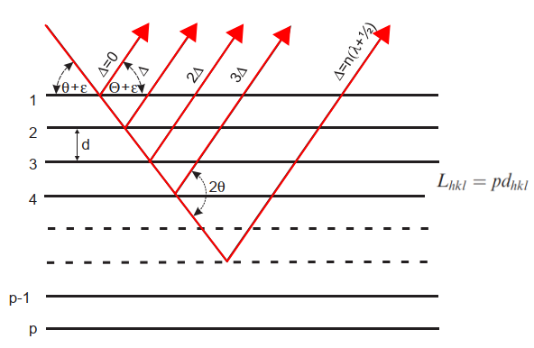

Prestipino.github.io
my page to dump few stuff
Profile function with physical meaning the number 7 in Fullprof
Thompson, Cox and HastingsInstrumental contribution
The instrumental contribution in accordance with the paper of Caglioti Pauletti and Ricci is gaussian (they worked with neutron ;-)) and it is controlle by the famous formula \[\Gamma^2 = U tan^2(\theta) + V tan(\theta) + W\] The three terms account for basic broadening by slits(collimator), wavelenght dispersion, monochromator mosaicity influence of monochromator as described by CagliottiSample contributions
 XY are considered for FullProf for Gsas it is the opposite
XY are considered for FullProf for Gsas it is the opposite
Strain contribution
If Strain is defined as \(\partial d \over d\) it is very easy to derive the enlargment of the peaks as function of \(\theta \) by derivation of the Bragg formula \[d_{hkl} = \frac{n\lambda}{2sin(\theta)}\] \[ \partial d = - \frac{\lambda}{2 tan(\theta)sin(\theta)} \partial\theta \] \[\epsilon_{hkl} = \frac{\partial d_{hkl}}{d_{hkl}} = -\frac{1}{tan(\theta)} \partial \theta\] \[\partial theta = -\epsilon_{hkl} tan(\theta) \]
Size contribution
This size broadening is described by the Scherrer equation. We now reproduce the simple derivation following Klug and Alexander (1974) or Bilinge & Dinebier (2008). The derivation is build considering that for a crystal for small deviation from Bragg angle \(\theta + \epsilon \) there will be a plane for which the difference of path lenght \(\Delta \) will be \(\lambda \over 2\) producing destructive interference. If the crystal is too small such plane will never arrive and intensity will be present.

The additional beam path between consecutive lattice planes at is: \[\Delta = 2 d sin(\theta + \epsilon) = 2 d (sin(\theta) cos(\epsilon) + cos(\theta) sin(\epsilon) \] \[\Delta \approx n \lambda + 2 d cos(\theta) \epsilon \] The corresponding phase difference is then: \[\delta \varphi = 2 \pi \frac{\Delta}{\lambda} = 4 \frac{4 \pi \epsilon d cos(\theta)}{\lambda} \] The phase difference between the top and the bottom layer, p is then: \[\delta \varphi = 4 p \frac{4 \pi \epsilon d cos(\theta)}{\lambda} = 4 \frac{4 \pi \epsilon L_{hkl} cos(\theta)}{\lambda}\] \[\epsilon = \frac{\lambda \delta \varphi}{4 \pi L_{hkl} cos(\theta)} \] where \(L_{hkl}\) is the crystallite size. Using a \(2\theta\) scale and the concept of integral breath: \[\beta_{hkl}=4 \epsilon = \frac{\lambda}{L_{hkl} cos(\theta)} \] generalizing for a spherical particle we obtain the Scherrer equation (K is function of grain shape, 0.89 for spheres) : \[\beta=\frac{K \lambda}{L cos(\theta)} \]